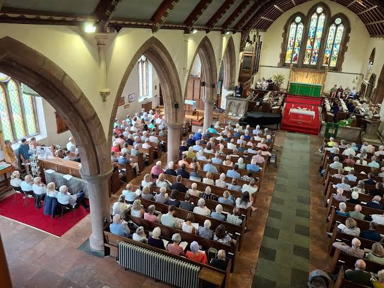
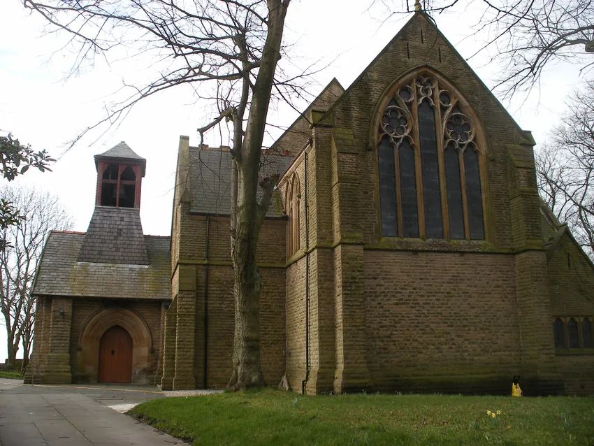
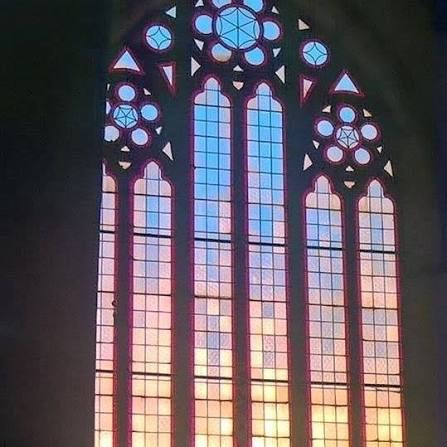
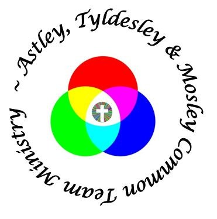

The Church of England · St John's Church · Mosley Common
A friendly church for all ages and backgrounds, making Jesus known in Mosley Common since 1887.
Mosley Common Road, M28 1AN
Verse of the day
Thy word is a lamp unto my feet, and a light unto my path.Psalm 119:105
New here?
You don't need to know anything, wear anything special or believe anything yet. Turn up on a Sunday and someone will say hello.
Holy Communion, a Service of the Word, or relaxed Café Church. They take turns through the month.
Sunday School, a toddler group on Thursdays and Messy Church after school. All leaders are DBS checked.
The Place of Welcome Café is open on Tuesdays at 10am. Drop in, no booking.



What's on
Every week
Everyone is welcome at all of these. Just turn up.
Children and families
Children and young people are an important part of our church family. All leaders are DBS checked and work within our child protection policy. Questions? Ring Adele on 01942 888786.
Next: Friday 27 November, 3.15pm to about 5.30pm
Crafts, celebration, games and a sit-down meal together, at St John's School. Children, you must bring an adult!
messychurch@mosleycommonchurch.org.uk
Thursdays, 9.30am to 11.00am
Come along with your baby or toddler for play, a brew and a chat with other parents and carers.
Sundays, 10.00am
Groups meet weekly and give a warm welcome to new members.
Founded 1822
Our church school has served the village since 65 years before the church was built. We work closely together.
Community
The land between the brook and the church is becoming a community garden for everyone. A new path, funded and built by Parr Bridge Retail Park, now links Church Vale through the church grounds to Mosley Common Road, the shops and the school.
There are plenty of ideas for what comes next. They depend on funding and on volunteers.
Bronze award from A Rocha · working towards Silver
Saturday mornings, 10.00am, monthly. See the diary.
Bring donations to church. Everything collected goes to local people.
Faith and prayer
Informal, relaxed groups that meet to discuss the Bible and what it means for life today, and to pray for and support one another. New members are always welcome.
Thursdays: 1st and 3rd of the month, 8.00pm, in Astley. Currently The Prayer Course. Ring Mike Stuckey, 0161 357 0155.
Tuesdays: every other week, 8.00pm to 9.30pm, church lounge. Led by Sarah Hughes.
Our prayer chain is a small team who will pray for any urgent request. Everything is handled in confidence.
Nick and Adele Hardman, 01942 888786
Glennys Worthington, 07743 271141
We support people and organisations working in Croatia, India and the UK with prayer, money and practical help. Graham Ridge is our mission co-ordinator.
As Christians we are called by Christ first and foremost to be wholeheartedly committed to Him as our Saviour and Lord, and called together to be part of His people, the church. As a local church we aim to be committed to:
Who's who

St John's is one of three Church of England parishes in the Astley, Tyldesley and Mosley Common Team Ministry, with St Stephen's Astley, St George's Tyldesley and The Mission church at Shakerley Community Centre. We also work with our neighbours in Churches Together in Boothstown.
Contact
Team administrator: atmcteamclerk@gmail.com
St John's Church has safeguarding policies in place. If you have a concern, please contact our Parish Safeguarding Co-ordinator, Sue Bloor, or see the Diocese of Manchester safeguarding pages.
On the live site a short “keep in touch” form will sit here, for the mailing list and prayer requests.
For the church team
No website login and no code. The diary, the weekly groups and the team list are filled from one shared Google Sheet with three tabs. Change a row and the website changes. When the magazine comes out, add that month's dates and you are done.
| Tab | Columns | Example row |
|---|---|---|
| Dates | Date · Time · What · Where | 22 Nov 2026 · 10:00 · Holy Communion · Church |
| Every week | Day · Time · What · Details | Tuesday · 10:00 · Place of Welcome Café · Church lounge |
| Team | Role · Name | Church warden · Andrea Taziker |
In this demo the same rows are stored inside the page.